-NT연구소 3D printer 사용하는 법-
-조심히 다룹시다!!!
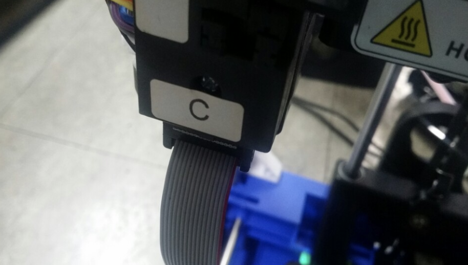
c부분 전선을 연결한다.
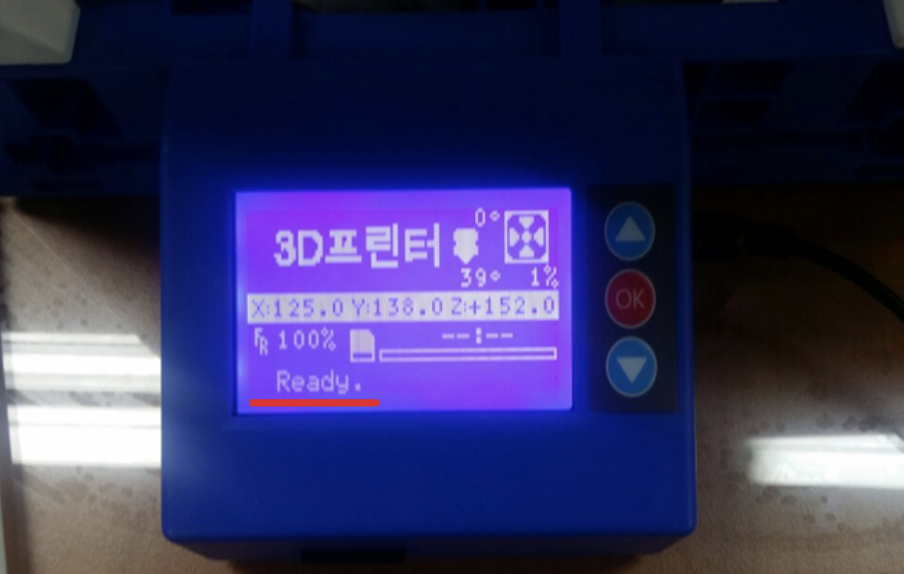
모든 커넥터 연결 후 다음과 같이 나오면 된다.
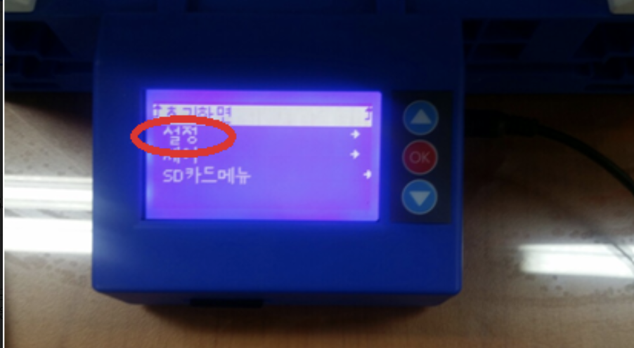
설정을 누른다.
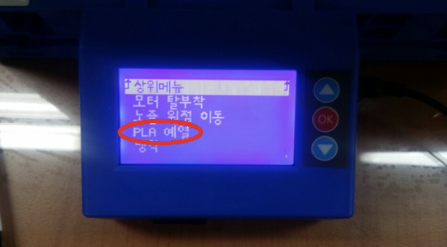
PLA 예열을 누른다. (이때부터는 노즐온도가 180도까지 올라가니 조심하자!)
-노즐 교체하기-
-조심히 다룹시다!!!
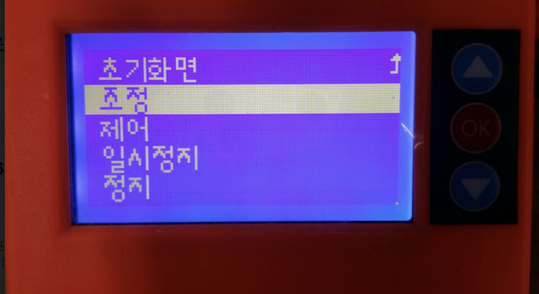
조정을 누른다.
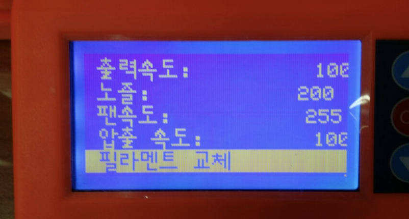
필라멘트 교체를 누른다.
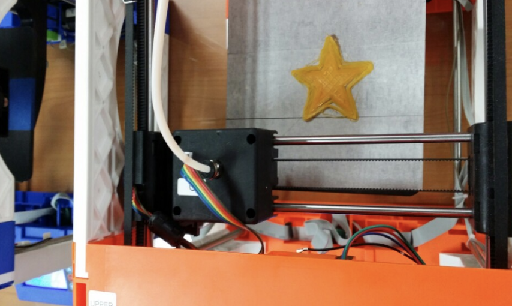
'필라멘트 교체'를 누루면 필라멘트가 옆 그림과 같이 빠진다.
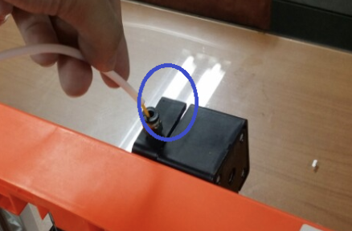
위 사진에 표시된 부분을 누르면서 빼고 새 필라멘트를 넣는다.
-3D 모델링 하기-
Tinkercad
자신의 이름이 새겨진 도장 만들기.
회원가입을 한다.
(아이디,비밀번호 잃어버리지 마세요 제발...)
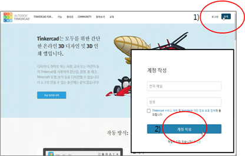
작업 환경은 다음과 같다.
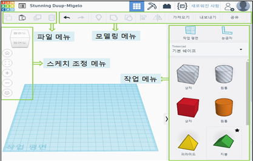
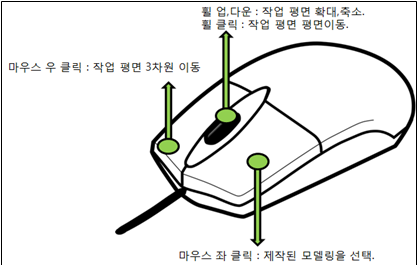
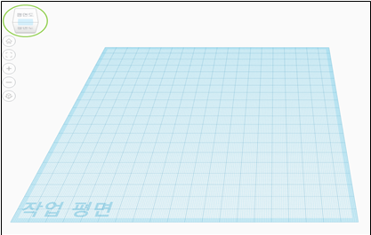
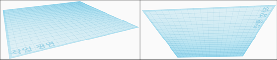
먼저 작업의 편리를 위해 눈금자를 설정한다.
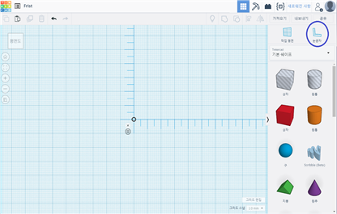
기본 쉐이프에서 원통을 다음 그림과 같이 설정한다.
(도형의 모양과 크기는 개인에 디자인에 따라 다르게 해도 됩니다!)
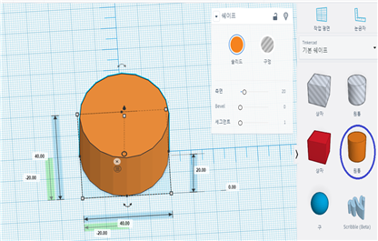
기본 쉐이프에서 빗금이 쳐진 원통을 다음 그림과 같이 설정한다.
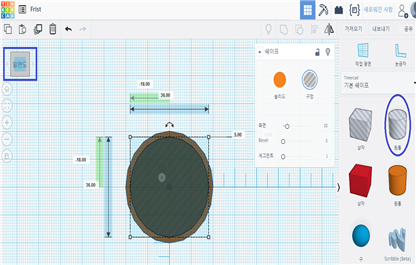
오른쪽 상단의 '그룹 만들기' 버튼을 눌러 원통에 구멍이 뚤리게 한다.
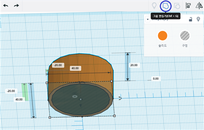
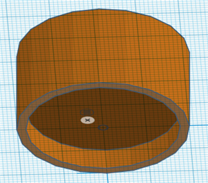
다시 기본 쉐이프에서 원통을 꺼내 다음 그림과 같은 모양으로 손잡이를 만든다.
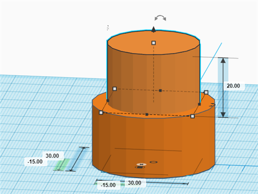
기본 쉐이프에서 TEXT에 들어가 문자에 자신의 이름을 쓴다.
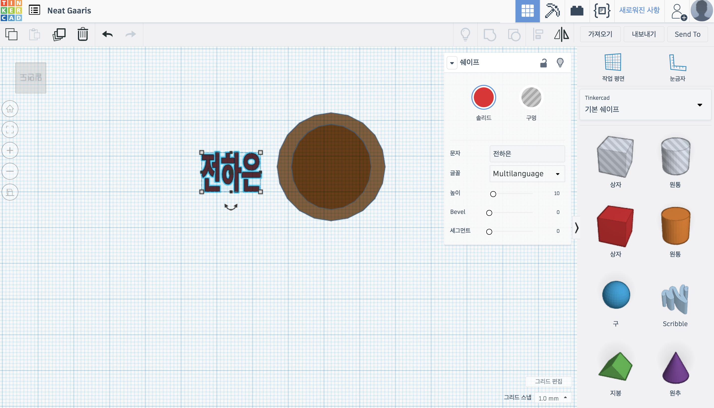
그 뒤 뚫린 원통 안에 TEXT를 넣는다.
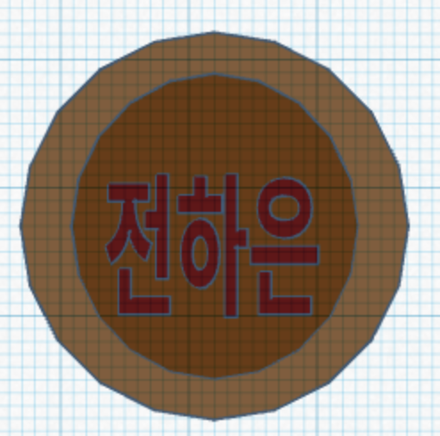
높이를 도형 위 화살표로 조정해 마무리한다.
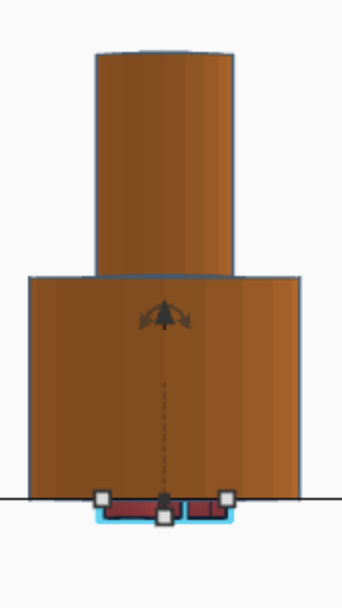
완성!!!
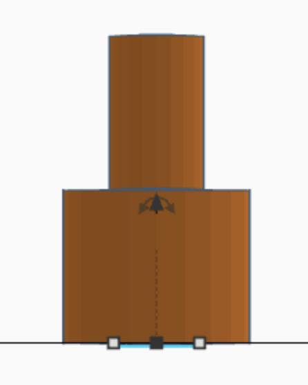
마지막으로 내보내기를 눌러 STL 파일 형식으로 다운을 받는다.
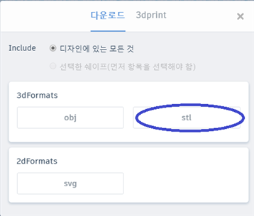
완성!!!
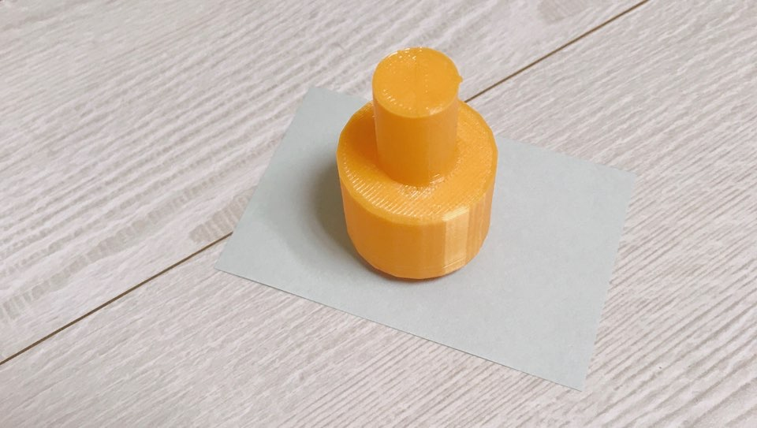
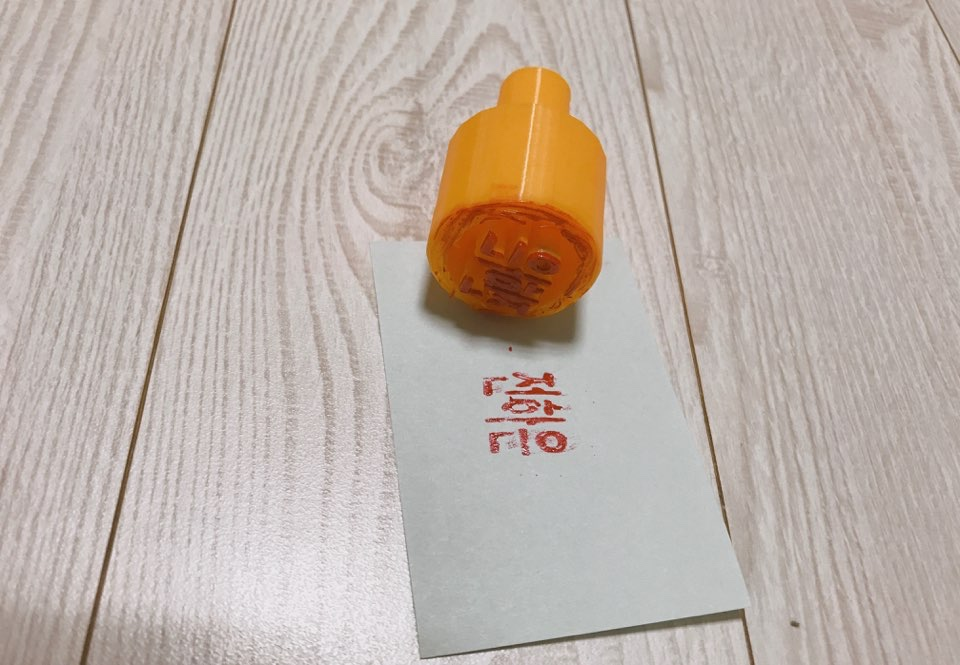
<참고>
-리쏘페인팅
-싱기버스